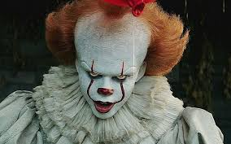

Pennywise
Pennywise é uma criatura sobrenatural metamorfa, que muda de forma, e geralmente aparece na forma de um palhaço para atrair crianças, que são seus principais alvos. No livro de terror It (A Coisa), publicado em 1986 pelo escritor Stephen King, o palhaço alimenta-se dos medos e fobias das crianças, que moram na cidade de Derry, através da habilidade da leitura de mente das vítimas, toma a forma do que lhes der mais medo, assim como Freddy Krueger em seus filmes. Esse personagem ganhou uma grande popularidade nos últimos anos.
Tem medo de palhaços e circos? Então enfrente seus medos com a série de filmes de It, A coisa. =)